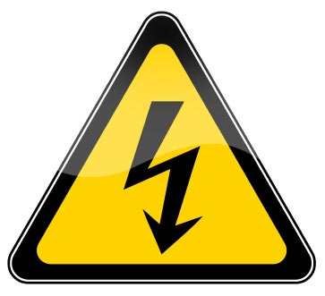

Electric Shock
Electric Shock
 WARNING: casualty may be LIVE!
WARNING: casualty may be LIVE!
Be careful not to touch the casualty's skin before the electrical source is disconnected. Be alert for the presence of water or conducting materials which may be in contact with the casualty.
The human body is an efficient conductor of electricity. When a casualty receives an electric shock from a household appliance or a power line, the electricity is conducted through the body. A casualty may receive significant burns or the electric shock may interfere with the heart's electrical system. Burns to the casualty may be internal and greater than they appear on the surface.
Domestic voltage
It is urgent that the casualty be disconnected from the electrical source, either by:
 Turning off the power supply and disconnecting any plugs from the outlet and isolating the electricity supply at the main power board if possible; or
Turning off the power supply and disconnecting any plugs from the outlet and isolating the electricity supply at the main power board if possible; or
 Removing the casualty from the electrical source by pushing or pulling them with non conducting materials, eg. wooden stick/board, rope, curtains or blanket.
Removing the casualty from the electrical source by pushing or pulling them with non conducting materials, eg. wooden stick/board, rope, curtains or blanket.
Be careful not to touch the casualty's skin before the electrical source is disconnected, and be alert for the presence of water or conducting materials with which they may be in contact.
High voltage
High voltage electrocution involves an extreme degree of risk to rescuers. If the electrical source is part of the electrical distribution grid (poles, pylons, underground cables, transformers or stations) you must not enter the area until electrical authorities have certified it safe.
You can do nothing for a casualty within the zone of danger! Protect yourself and others.

Signs and Symptoms
 difficult, or absent breathing
difficult, or absent breathing
 absent, weak or irregular pulse
absent, weak or irregular pulse
 evidence of burns
evidence of burns
 evidence of fractures
evidence of fractures
 entrance and exit wound burns
entrance and exit wound burns
 collapse and unconsciousness
collapse and unconsciousness

Care and Treatment
 call Triple Zero (000) for an ambulance
call Triple Zero (000) for an ambulance
 inform electrical authorities if high voltage involved
inform electrical authorities if high voltage involved
 if no signs of life – commence rescue breathing and compressions
if no signs of life – commence rescue breathing and compressions
 cool and cover burns with non-stick dressings
cool and cover burns with non-stick dressings
 reassurance
reassurance